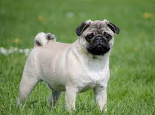

Мопс |
|  |
Мопс (нидерл. mops) — порода декоративных собак. Мопсы были привезены из Китая в Европу в XVI веке и были популярны в Западной Европе и Нидерландах. В Соединённом Королевстве в XIX веке королева Виктория развила страсть к мопсам, которую она передала другим членам королевской семьи. Мопсы известны тем, что являются общительными и нежными собаками-компаньонами. Американский клуб собаководства описывает личность породы как «уравновешенный и обаятельный». Собака этой породы была признана лучшей на «Всемирной выставке собак» 2004 года. |
Происхождение породыМопс — древняя китайская порода. В ранних китайских рукописях упоминаются «квадратные, низкие собаки с короткой мордой». В Китае существовали собаки «Ха Па» и «Ло Цзе». Две эти разновидности были очень схожи и различались только длиной шерсти. «Ха Па» были длинношёрстными. Вероятно предками мопсов были «Ло Цзе», они походили на пекинесов, но обладали короткой шерстью. Мопсы были собаками знати и проживали в богатых домах. В те времена у мопсов ещё не было столь глубоких морщин, но четкий рисунок складок на лбу проявлялся и был схож с иероглифами. Именно поэтому морщины на лбу мопса называли императорским знаком. Мопс попал во Францию с турецким флотом в 1553 году. Позже эта порода стала любима и в Нидерландах, где её окрас уподоблял цветам правящего дома Оранских. Когда Вильгельм III Оранский стал английским королём, он и его жена Мария II привезли в 1689 году мопсов из Нидерландов. Эта порода была весьма популярна около двух столетий. Но постепенно мопсов становилось меньше. В 1864 году для английской королевы Виктории, пожелавшей иметь у себя эту породу, с трудом разыскали одну собаку. Через 20 лет был создан первый клуб любителей мопсов, и благодаря ему порода начала улучшаться и приобретать те стандарты, которые и поныне ценятся в этих собаках. Первая жена Наполеона, императрица Жозефина, имела любимого мопса по кличке «Фортуна». |
|
Внешний видМопс — собака квадратного формата, компактная и пропорциональная. К мопсу подходит девиз multum in parvo. Стандарты рубежа XX—XXI веков подразумевали вес породы 6—8 кг. В стандарте не оговаривалась высота в холке, но на практике оптимальная высота сук должна быть в диапазоне 25—30,5 см, кобелей — 30,5—33 см. Стандарты породы второй половины XIX века предписывали высоту в холке 30,5 см, вес — 7 кг. |
|